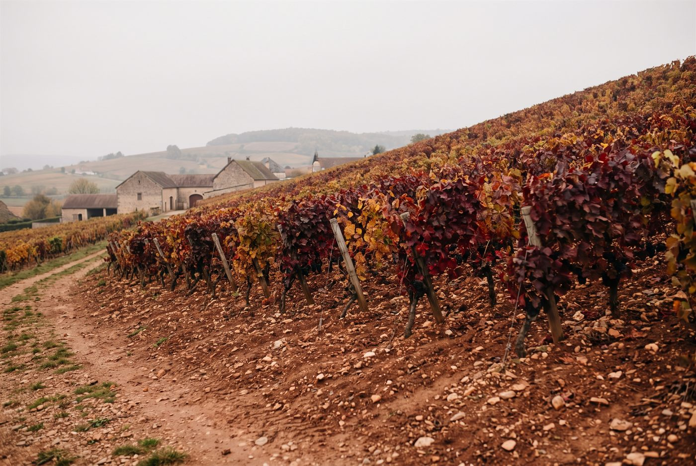

Les domaines · Côte chalonnaise · Mercurey
21
Mercurey · Côte chalonnaise
Domaine Raphaël Corcia
Des Mercurey de vieilles vignes, précis et minéraux, signés par une jeune maison en conversion biologique.

Ambiance de Mercurey
Raphaël Corcia a repris en 2021 l'ancien Domaine de la Vieille Fontaine à Mercurey, quatre hectares de vieilles vignes dont plusieurs parcelles plantées dans les années 1940 et 1950. Dès le premier millésime, il a fait le choix d'une viticulture biologique et d'interventions minimales au chai. Les étiquettes portent aussi le nom d'Alain et Raphaël Corcia.
Blancs
- Cépage · ChardonnayVignes de 1949 sur 0,23 ha, un blanc de texture crayeuse et de fruit blanc.
- Cépage · ChardonnayParcelle de 0,4 ha plantée en 1951 dans le clos monopole.
- Cépage · ChardonnayVignes de 1970 sur 0,35 ha.
- Cépage · AligotéCuvée ajoutée à la gamme avec le millésime 2023.
Rouges
- Cépage · Pinot noirParcelle de 0,55 ha plantée en 1949, le sommet de la gamme en rouge.
- Cépage · Pinot noirMonopole du domaine, vignes replantées en 1974.
- Cépage · Pinot noirVieilles vignes des années 1940 et 1950 sur 0,53 ha.
- Cépage · Pinot noirPetite parcelle de 0,22 ha plantée dans les années 1960.
- Cépage · Pinot noirUn hectare de vignes de 1959, le rouge d'entrée de gamme du domaine.
Ces cuvées vous parlent ?
Demander les disponibilités